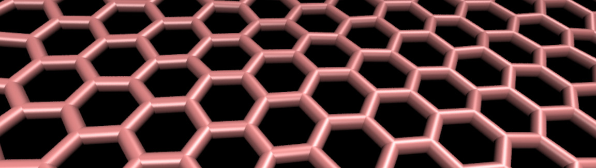
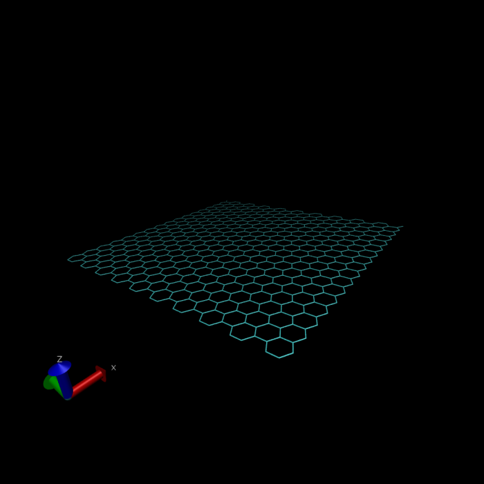

Graphene under deformation

In this tutorial, we are going to use molecular dynamics and simulate the deformation of a single layer of graphene.
If you are not already familiar with LAMMPS and molecular dynamics, I suggest you to start with tutorial 1.
If you already have a good grasp on LAMMPS, you can download directly the input script that will be written following this tutorial: input.lammps, the parameter file and the data file.
Step 1: generation of the graphene sheet
The initial configuration will be generated using VMD. Open VMD, go to extensions, modeling, nanotube builder. A window will open, and from this window it is possible to generate a sheet of graphene (note that it is also possible to generate a nanotube). For this tutorial, we are going to generate a 4 nm per nm sheet of graphene. Simply change the values of "Edge length along x" and "Edge length along y" to 4 (its in nanometer), and click on "Generate Sheet". You shoud see this:

At this point, this is not a molecular dynamics simulations, but just a cloud of points that looks like graphene. We are going to export this cloud of points and use it as the initial lammps data file. In the terminal (the one you used to open VMD), enter the following command:
topo writelammpsdata data.lammps full
More details about this command can be found on the personal page of Axel Kohlmeyer. In short, Topotool deduces the location of bonds, angles, dihedrals, and impropers from the cloud of atoms, and generates a file that can be read by LAMMPS. The keyword "full" correspond to the atom type you want to use in you simulation, it can be molecular, full, etc. A new file named "data.lammps" must have beed created. It starts like that (alternatively you can download the file here):
LAMMPS data file. CGCMM style. atom_style full generated by VMD/TopoTools v1.7 on Tue Jan 12 19:39:40 GMT 2021
680 atoms
983 bonds
1894 angles
3665 dihedrals
608 impropers
1 atom types
1 bond types
1 angle types
1 dihedral types
1 improper types
-0.5 0.5 xlo xhi
-0.5 0.5 ylo yhi
-0.5 0.5 zlo zhi
# Pair Coeffs
#
# 1 CA
As you can see, the data.lammps file contains informations about the positions of the carbons atoms, but also about the bonds, angles, dihedrals, and impropers interactions between the carbon atoms. Note that it does not contain the force field (for example the value of the energy of the bond number 1 is not specified), but it contains the identify of the atoms that are linked toghether.
There is only one issue with the file as generated with topotool, the box coordinates are "-0.5 0.5", and if we use units "real" it means that the box goes from -0.5 Angstrom to 0.5 Angtrom in X, Y, and Z, which is of course too short. Let us change it to:
-20 60 xlo xhi
-20 60 ylo yhi
-20 60 zlo zhi
Save the "data.lammps" file in the same folder as your futur LAMMPS input script. We are done with the system generation, we can start the molecular dynamics simulations.
Step 2: LAMMPS input script
Create a new text file and name it "input.lammps". Copy the following lines:
# Initialisation
variable T equal 300
units real
atom_style full
boundary p p p
pair_style lj/cut 14
bond_style harmonic
angle_style harmonic
dihedral_style opls
improper_style harmonic
special_bonds lj 0.0 0.0 0.5
# System definition
read_data data.lammps
Most of these command lines have been seen already in previous tutorials, with a few differences: first, the pair style here is lj/cut with parameter 14, which means that the atoms closer than 14 Angstroms from each others interact through a Lennard-Jones potential. Notice that there is no coulombic interaction, because all the atoms in pure graphene have a charge of 0. The bond, angle, dihedral, and improper styles specify the potential, you can refer to the LAMMPS website (see for example the OPLS dihedral style). The three numbers of the special bonds command are weighting factors for the Lennard-Jones interaction between atoms connected by bond (respectively directly bounded, separated by two bonds, etc.). The first weighting factor, with a value of 0, means that two atoms connected by a bond do not interact through LJ potential. Then the read data command opens the data.lammps file previously generated with VMD, which contains the information about the box size, atoms positions, etc.
What we need now is a force field. Create a new text file and name it "PARM.lammps". Copy the following lines in it:
pair_coeff 1 1 0.066047 3.4
bond_coeff 1 469 1.4
angle_coeff 1 63 120
dihedral_coeff 1 0 7.25 0 0
improper_coeff 1 5 180
The pair_coeff indicates the Lennard-jones parameter for the only type of atom of the simulation, carbon. The bond_coeff (respectively angle_coeff, dihedral_coeff, improper_coeff) indicates the energy and equilibrium distance of the only type of bond (respectively angle, dihedral, improper) in the simulation. The file PARM.file can be included in the simulation by adding the following line to input.lammps:
include PARM.lammps
The goal of the present simulation is to impose a deformation to the sheet. To do so, we need to define some groups of atoms. Each group will later be associated with a different dynamics. Let us isolate the atoms at the bottom edge (these atoms will be force to move at a given speed) and the atoms at the top edge (these atoms will also be force to move at a given speed). Let us also put the remaining atoms (the one in the middle) in a group. To do so we first define three regions, rtop, rbot, and rmid, corresponding respectively to the three groups :
# Simulation settings
group gcar type 1
variable xmax equal bound(gcar,xmax)-0.5
variable xmin equal bound(gcar,xmin)+0.5
region rtop block ${xmax} INF INF INF INF INF
region rbot block INF ${xmin} INF INF INF INF
region rmid block ${xmin} ${xmax} INF INF INF INF
The bound variables (bound(gcar,xmax) and bound(gcar,xmin)) locate the extreme most coordinates along x, therefore the region rtop, that goes from "xmax-0.5" to "INF" along x will contain only one line of carbon atoms. Then groups corresponding to the atoms located in each regions respectively can be defined:
group gtop region rtop
group gbot region rbot
group gmid region rmid
When running the simulation, the number of atoms in each group is printed in the terminal, you can control there that you did not make any mistake.
Let us specify the thermalisation and the dynamics of the system. Add the following lines to input.lammps:
velocity gmid create ${T} 48455 mom yes rot yes
fix mynve all nve
compute Tmid gmid temp
fix myber gmid temp/berendsen ${T} ${T} 100
fix_modify myber temp Tmid
The "velocity create" command gives initial velocities to the atoms of the group gmid, assuring an initial temperature of 300K for these atoms. NVE integration is applied to all atoms, and a Berendsen thermostat is applied to the atoms of the group gmid only. The "fix modify" ensures that the fix Berendsten use the temperature of the group gmid as an input, instead of the temperature of whole system. We are not thermalising the atoms of the edges because their motion will be restrained.
To restrain the motion of the atoms at the edges, add the following commands:
fix mysf1 gtop setforce 0 NULL 0
fix mysf2 gbot setforce 0 NULL 0
velocity gtop set 0 NULL 0
velocity gbot set 0 NULL 0
The setforce commands cancel the forces applied on the atoms of both edges during the whole simulation along x and z, and the velocity commands cancel the initial velocities along x and z. Therefore, the atoms of the edges will remain immobile during the simulation (if no other command is applied to them).
All the important commands have been written. In order to measure the strain and stress in the graphene sheet, let us extract the distance between the two edges as well as the force applied on the edges. Let us also create a dump file containing the trajectories (for VMD).
variable L equal xcm(gtop,x)-xcm(gbot,x)
fix at1 all ave/time 10 100 1000 v_L file length.dat
fix at2 all ave/time 10 100 1000 f_mysf1[1] f_mysf2[1] file force.dat
dump mydmp all atom 1000 dump.lammpstrj
Notice that the values of the forces on each edge are extracted from the fixes mysf1 and mysf2. This fixes cancel the force on a group of atoms, but allow to extract the values of the force before its cancelation. This is what we are doing here. Let us run a small equilibration step.
thermo 100
thermo_modify temp Tmid
# Run
timestep 1.0
run 5000
Then, we perform a loop. At each step of the loop, the edge are slightly displaced, and the simulation runs for a short time.
variable var loop 10
label loop
displace_atoms gtop move 0.1 0 0
displace_atoms gbot move -0.1 0 0
run 1000
next var
jump input.lammps loop
The following system will be created: